Loads directional steering wheel
In Solid Edge Simulation and Generative Design, the steering wheel is a handle that you can use to define the direction in which a load is applied. The load command determines the appearance of the steering wheel that is displayed and the controls that are available.
Orienting the steering wheel in Solid Edge Simulation
The primary axis (the long axis) defines load direction:
-
On the directional vector handle:
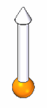
-
On the steering wheel (1).
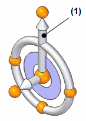
To reorient the primary axis so that it points in the direction you want, you can use the following features on the steering wheel:
-
You can click the cardinal points (2) on the steering wheel to automatically reorient the long axis by 90-degree increments in the same plane.
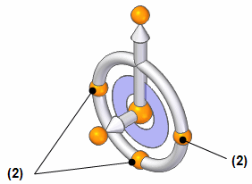
-
You can click the bearing (4) to reorient the long axis to a point out of the plane.
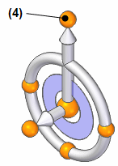
If you want to relocate the steering wheel on the model, you can use either of these techniques:
-
You can click the steering wheel origin (5) to drag the tool anywhere on the model. When you click again, it is fixed to that point, face, or edge.
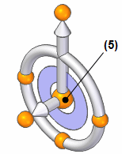
-
You can click the short axis (6) on the steering wheel to move it in that direction.
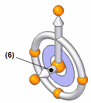
Steering wheel examples
When you select a model face while placing a load, the load direction vector is displayed.
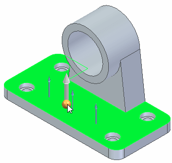
Click the origin knob of the steering wheel to display the 3D steering wheel handle. When the 3D steering wheel is displayed, you can:
-
Drag the origin knob of the steering wheel to a new location to define the force on an edge or point instead of a face.
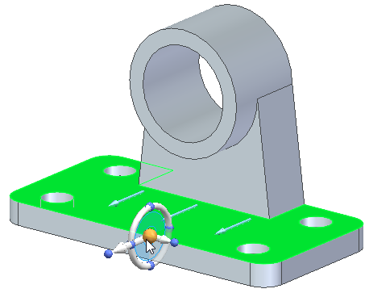
-
Click the steering wheel cardinal knobs to redefine the force direction in 90 degree increments.
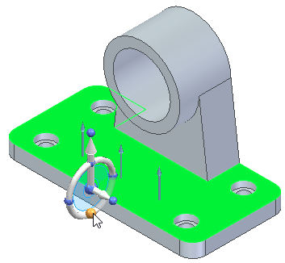
-
Reorient the long axis of the steering wheel to define the direction of gravity on a part.
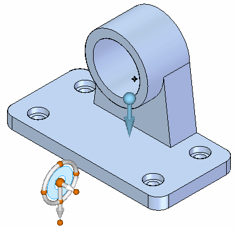
-
Drag the steering wheel to define the rotational axis of a torque load.
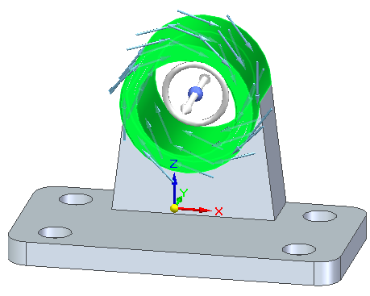
How do I
Define a loadActivity: Apply a bearing load
Activity: Apply a centrifugal load
Activity: Apply a torque load
Activity: Apply a body temperature load
Learn more
Creating and using loadsLoad labels and symbols
Structural and body loads
Thermal loads
External loads (imported loads)
Look up more details
Loads command barThermal Load Options dialog box
Radiation Load Options dialog box
Color dialog box
Graphic Symbol Size dialog box